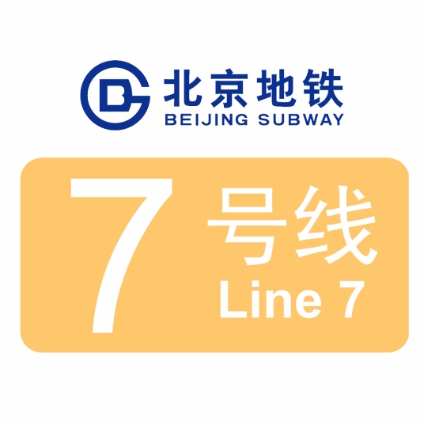
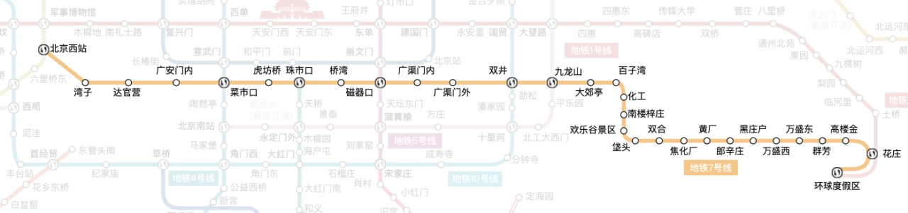
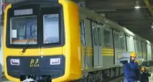

北京地铁7号线（Beijing Subway Line 7）是中国北京市第十七条开通运营的地铁线路，于2014年12月28日开通一期（北京西站至焦化厂站），2018年12月30日开通垡头站，2019年12月28日开通双井站和东延伸段（焦化厂站至花庄站），2021年8月26日开通运营环球度假区站，其标志色为浅橙色。
据2022年12月北京地铁官网显示，北京地铁7号线大致呈东西走向，途经丰台区、西城区、东城区、朝阳区、通州区；线路西起北京西站，东至环球度假区站。
线路走向

车辆设施
BD32

北京地铁7号线使用8节编组B型列车（6动2拖），列车由北京地铁车辆装备有限公司生产，这是该公司首次独立设计制造地铁列车；型号为BD32，于2013年制造，初期配车数量35列、280辆，编号为07001-07035，最高运行速度每小时80千米，最大载客能力为2766人。采用外挂式移动车门。车厢内客室高度2110毫米。车辆内饰以灰色为主色调。